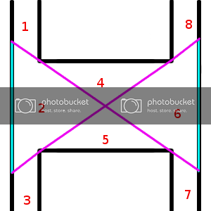

Hello everyone,
So over the (short) course for mapping with Loop Mod, I came across some interesting situations when it came to visibility. In short, there came a point where I was playing my level and I decided to run some tests. To my horror, the entire level was rendering all the time, and as one could imagine, that slows the game way down. That’s not good. Obviously this means a problem with the visleafs.
For those of you who don’t know, visleafs are boxes created when the map is compiled. These boxes determine all of the areas within a level. The entire world is put into one visleaf or another. Enter VVIS, which tests the visibility of all visleafs to determine what should be rendered by the engine when the player is in a given location.
The way it does this is that it attempting to draw a line between one leaf and another. If the active leaf is able to draw a line between itself and another leaf, the entire contents of that other leaf are rendered. This is a concept called the Potential Visible Set, or PVS.
So you can imagine that when I say the whole level was rendering, it was because the leaf I was in could see leaves throughout the entire map. Obviously I want to do something about this, and I must do so with the use of hint brushes (which cut visleafs).
And in doing so I learned a few things of which I will share.
There are three questions that should be considering when placing hint (and skip brushes) inside a map. They are:
- Is it cheap in terms of geometry?
- Does it reduce the PVS?
- Does it create a simple visleaf layout?
In this tutorial, I will detail how I came about realizing all three of these areas using a real situation that I came across.
So let’s say we have a situation like this.
Our world is in black. Visleafs are in red.
So as we can see, vbsp didn’t really cut this for optimal performance. For one, leaf 1 can see 2 and 3, meaning that this entire area is rendered, even if we are standing at the top of the map. Let’s start with some simple leaf’ing; I’m going to cut so that we can’t see the opposite tunnel.
So this is a bit better. The contents of leaf 1 cannot see leaf 6. Leaf 3 can’t see leaf 7. And vice versa. We’ve already cut down on the visibility.
But consider the following. If you happen to be mapping to a high-cost level and you need all the brushsides you can get (there is a limit to the amount of faces you can have in a single level), this setup is not the way to go. We’ve just spent 24 brushsides trying to optimize one area. That’s pretty significant.
Is there any way we can simplify this area? The answer is yes. Notice that some hint brushes share a plane with each other. We can use this to our advantage, using one brush for two tunnels. If we apply that thinking…
We have just cut our brushsides by half. That’s a very nice improvement. And it does the exact same job as our previous iteration. But can it be better? Of course! Notice that the top and bottom are parallel to each other.
We are doing the exact same thing using just one brush. Still doing great!
Now there is a distinctive problem with this setup though. For as simple and cheap this setup is, it doesn’t really reduce PVS as much as it optimally would. Leaf 1, for example can still see these leaves; 2, 3, 4, 5, and 7. And traveling just south into leaf 2 results in all leaves being drawn at once.
Therefore, the next thing we need to do is reduce visibility.
As most mappers will probably know, using a diagonal hint brush on a corner does a great job of reducing visibility. One hall cannot see the other, and all of that. We have some 'corner’s here, so it might be worthwhile to treat them as such.
The only drawback to this world setup is that it will force me to use an additional hint brush. It is impossible to make any concave shapes, so that limits the options. With that in mind, we can try something like this:
So let’s test this setup: what can leaf 1 see? Well, maybe a better approach would be to determine what it can’t see. So for starters it can’t see leaf 4, so that isn’t drawn. It also can’t see leaves 8, 9, 0 and A. This is a very significant improvement, because there is much less being drawn that, from the beginning, did not need to be drawn.
The only issue at the moment is that leaf 6 can see everything. We need to somehow cut that in half. Let’s see if this works?
Okay, so this works. We have a little more wiggle room for what is visible and what it not. But we’ve just spent and entire 6 brushsides on it. There has to be a better way. What if we extended those diagonals? Can that be done with just two brushes?

Yes we can. Leaf 6 cannot see leaves 1, 3, 0, and A. PVS is small now. We have greatly reduced the amount of level that is being drawn at any given time. That’s fantastic, and hopefully the game should be faster.
So now one problem remains. There’s now quite a few visleaves in this setup. We need to reduce this somehow, and we have to do it without increasing our brush count and increasing our PVS.
The first thing we should ask is at what point would a tunnel be able to see the tunnel diagonally from it? The answer is to draw a line. We can do something like this, for example.
Still treating the setup as having corners, this fulfills the PVS directive as leaf 2 cannot see leaves 4, 5, or 6. The same also holds true for what leaf 6 can see. We can perform a similar relationship for 1 and 5.
We finally arrive at a visleaf setup that follows all directives. The PVS is very limited in this setup, the leafs that result are simple and few, and we’ve done all this using as few brushes as possible. We cannot possibly improve this in terms of function.
But can we make it prettier?

A mapper can dream…